Путь «Шут»
От слабой к сильной: Seq 9 «Провидец» → Seq 1 «Служитель Тайн». Сменить путь можно на «Ошибка» или «Дверь» — с Seq 5 и сильнее, зельем на ступень выше (как).
| Seq | Последовательность | Ступень сервера |
|---|---|---|
| 9 | Провидец | II |
| 8 | Клоун | III |
| 7 | Фокусник | IV |
| 6 | Безликий | V |
| 5 | Кукловод | VI |
| 4 | Странный Колдун | VII |
| 3 | Учёный Былых Времён | VIII |
| 2 | Призыватель Чудес | — |
| 1 | Служитель Тайн | — |
У каждой последовательности: зелье и его ингредиенты (главный — первым), способности, которые она открывает, и отыгрыш — действия, которые переваривают зелье. Ингредиенты указаны с двумя самыми доступными источниками; все — по ссылке. Ингредиенты Seq 9–6 этого пути бывают и в товарах у жителя Торговец Потусторонних — у каждого по 2 случайных предложения на уровень (цены).
Seq 9 · Провидец
Зелье  Провидец Зелье, формула
Провидец Зелье, формула  Провидец Рецепт зелья (Последовательность 9). Эта Seq нужна для ступени II.
Провидец Рецепт зелья (Последовательность 9). Эта Seq нужна для ступени II.
Ингредиенты
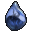
Кровь кальмара Лавос — существо мода: Мурлок (водится: океаны) — 26 % за убийство. Все источники (2) Очищенная вода — крафт: печь; сундук: Постройки Мира духов — 39 %. Все источники (3)
Очищенная вода — крафт: печь; сундук: Постройки Мира духов — 39 %. Все источники (3) Настой ночной ванили — добыча: Фантом (убить игроком) — 8 % за убийство. Все источники (2)
Настой ночной ванили — добыча: Фантом (убить игроком) — 8 % за убийство. Все источники (2) Листья золотой мяты — сундук: Бастион (сокровищница) — 50 %; сундук: Бастион, Бастион (мост), Бастион (стойло хоглинов) — 20 %. Все источники (4)
Листья золотой мяты — сундук: Бастион (сокровищница) — 50 %; сундук: Бастион, Бастион (мост), Бастион (стойло хоглинов) — 20 %. Все источники (4) Ядовитый болиголов — добыча: Ведьма (убить игроком) — 8 % за убийство; сундук: Постройки Мира духов — 30 %. Все источники (3)
Ядовитый болиголов — добыча: Ведьма (убить игроком) — 8 % за убийство; сундук: Постройки Мира духов — 30 %. Все источники (3)
Способности
- Медитация — Медитировать, восполняя духовность
- Гадание
- Духовное зрение
- Физическое усиление (пассивная)
Отыгрыш — переваривание за действие и перерыв между засчитанными:
- Применить «Гадание» — 1,9 %, раз в 10 с
- Посмотреть в подзорную трубу — 0,19 %, раз в 8 с
- Взглянуть на компас — 0,19 %, раз в 8 с
- Взглянуть на часы — 0,19 %, раз в 8 с
- Использовать кафедру — 0,47 %, раз в 15 с
- Стоять на большой высоте — 0,095 %, раз в 30 с
- Встретить рассвет — 0,28 %, раз в 1 мин
- Прочитать подписанную книгу — 0,47 %, раз в 20 с
Seq 8 · Клоун
Зелье  Клоун Зелье, формула
Клоун Зелье, формула  Клоун Рецепт зелья (Последовательность 8). Эта Seq нужна для ступени III.
Клоун Рецепт зелья (Последовательность 8). Эта Seq нужна для ступени III.
Ингредиенты
 Рог серого горного козла Хорнакис — сундук: Аванпост разбойников — 12 %; сундук: Постройки Мира духов — 31 %. Все источники (4)
Рог серого горного козла Хорнакис — сундук: Аванпост разбойников — 12 %; сундук: Постройки Мира духов — 31 %. Все источники (4)- Очищенная вода — крафт: печь; сундук: Постройки Мира духов — 39 %. Все источники (3)
 Сок дурмана — пустая бутылка: Сирень — 50 % за попытку, бутылка остывает 1 с. Все источники (2)
Сок дурмана — пустая бутылка: Сирень — 50 % за попытку, бутылка остывает 1 с. Все источники (2) Порошок подсолнечника с чёрной каймой — блок: Подсолнух (ночью) — 12 % за блок. Все источники (2)
Порошок подсолнечника с чёрной каймой — блок: Подсолнух (ночью) — 12 % за блок. Все источники (2) Порошок травы золотого плаща — блок: Одуванчик, Подсолнух (ножницами) — 30 % за блок; сундук: Постройки Мира духов — 29 %. Все источники (3)
Порошок травы золотого плаща — блок: Одуванчик, Подсолнух (ножницами) — 30 % за блок; сундук: Постройки Мира духов — 29 %. Все источники (3)
Способности
- Предчувствие опасности — Пока активно, вы узнаёте обо всех поблизости, кто способен или желает причинить вам вред.
- Бумажные кинжалы (пассивная) — ПКМ с бумагой в руке — метнуть её как кинжал
- Акробатика (пассивная) — Крадучись, вы прыгаете вдвое выше
- Предчувствие опасности (пассивная) — Пока активно, вы узнаёте обо всех поблизости, кто способен или желает причинить вам вред.
Отыгрыш — переваривание за действие и перерыв между засчитанными:
- Запустить фейерверк — 0,17 %, раз в 1 с
- Убить при низком здоровье — 0,84 %, раз в 2 с
- Использовать проигрыватель — 0,42 %, раз в 10 с
- Использовать нотный блок — 0,25 %, раз в 5 с
- Поставить флаг — 0,42 %, раз в 20 с
- Съесть подозрительное рагу — 0,25 %, раз в 5 с
- Съесть плод хоруса — 0,25 %, раз в 5 с
- Поговорить с жителем — 0,25 %, раз в 10 с
Seq 7 · Фокусник
Зелье 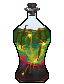 Фокусник Рецепт зелья (Последовательность 7). Эта Seq нужна для ступени IV.
Фокусник Рецепт зелья (Последовательность 7). Эта Seq нужна для ступени IV.
Ингредиенты
 Истинный корень туманного трента — блок: Мангровые корни (во время дождя; только природный блок) — 5 % за блок; существо мода: Каменный голем (водится: весь верхний мир) — 8,9 % за убийство. Все источники (3)
Истинный корень туманного трента — блок: Мангровые корни (во время дождя; только природный блок) — 5 % за блок; существо мода: Каменный голем (водится: весь верхний мир) — 8,9 % за убийство. Все источники (3) Сок туманного древня — пустая бутылка: любое бревно или листва (в биоме: Болото, Мангровое болото, Тёмный лес; во время дождя) — 50 % за попытку, бутылка остывает 2 с. Все источники (2)
Сок туманного древня — пустая бутылка: любое бревно или листва (в биоме: Болото, Мангровое болото, Тёмный лес; во время дождя) — 50 % за попытку, бутылка остывает 2 с. Все источники (2) Порошок самоцвета-капли — крафт: верстак; сундук: Постройки Мира духов — 24 %. Все источники (4)
Порошок самоцвета-капли — крафт: верстак; сундук: Постройки Мира духов — 24 %. Все источники (4) Эфирное масло травы грёз — крафт: верстак. Все источники (2)
Эфирное масло травы грёз — крафт: верстак. Все источники (2)- Очищенная вода — крафт: печь; сундук: Постройки Мира духов — 39 %. Все источники (3)
Способности
- Воздушная пуля — Выпустить воздушный снаряд, по силе и скорости сравнимый с револьверной пулей
- Бумажное снаряжение — Создать снаряжение из бумаги
- Перенос урона — Переносить смертельные раны на другие части тела, снижая получаемый урон. Можно исцелить половину потерянного здоровья.
- Управление пламенем — Метать пламя
- Бумажная фигурка-двойник — Создавать бумажных двойников, принимающих удар вместо вас
- Огненный прыжок — Переместиться в любой огонь и получить после этого огнестойкость
- Подводное дыхание — Создать тонкую невидимую воздушную трубку, позволяющую дышать под водой
Отыгрыш — переваривание за действие и перерыв между засчитанными:
- Убить при полном здоровье — 0,74 %, раз в 2 с
- Применить «Огненный прыжок» при низком здоровье — 0,37 %, раз в 0,5 с
- Съесть золотое яблоко — 0,37 %, раз в 2 с
- Использовать стол зачаровывания — 0,37 %, раз в 10 с
- Бросить жемчуг Края — 0,22 %, раз в 5 с
- Создать компас — 0,22 %, раз в 20 с
- Убить моба, не нацеленного на вас — 0,37 %, раз в 5 с
- Выпить зелье невидимости — 0,37 %, раз в 5 с
Seq 6 · Безликий
Зелье 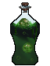 Безликий Рецепт зелья (Последовательность 6). Эта Seq нужна для ступени V.
Безликий Рецепт зелья (Последовательность 6). Эта Seq нужна для ступени V.
Ингредиенты
 Мутировавший гипофиз Тысячеликого охотника — добыча: Слизень (только самый большой, размер 4) — 8 % за убийство игроком; существо мода: Странная Погибель (водится: Мир духов; приходит и Ночью Мира духов) — 32 % за убийство. Все источники (3)
Мутировавший гипофиз Тысячеликого охотника — добыча: Слизень (только самый большой, размер 4) — 8 % за убийство игроком; существо мода: Странная Погибель (водится: Мир духов; приходит и Ночью Мира духов) — 32 % за убийство. Все источники (3) Кровь тысячеликого охотника — пустая бутылка: Крестьянин (с Shift; взрослое) — 35 % за попытку, бутылка остывает 10 с, существо получает 1 урона; существо мода: Странная Погибель (водится: Мир духов; приходит и Ночью Мира духов) — 32 % за убийство. Все источники (3)
Кровь тысячеликого охотника — пустая бутылка: Крестьянин (с Shift; взрослое) — 35 % за попытку, бутылка остывает 10 с, существо получает 1 урона; существо мода: Странная Погибель (водится: Мир духов; приходит и Ночью Мира духов) — 32 % за убийство. Все источники (3) Сок чёрного дурмана — пустая бутылка: Визерская роза — 60 % за попытку, бутылка остывает 1 с; сундук: Постройки Мира духов — 41 %. Все источники (3)
Сок чёрного дурмана — пустая бутылка: Визерская роза — 60 % за попытку, бутылка остывает 1 с; сундук: Постройки Мира духов — 41 %. Все источники (3) Порошок травы драконьего зуба — крафт: верстак. Все источники (2)
Порошок травы драконьего зуба — крафт: верстак. Все источники (2) Прядь волос глубоководной наги — существо мода: Мурлок (водится: океаны) — 13 % за убийство. Все источники (2)
Прядь волос глубоководной наги — существо мода: Мурлок (водится: океаны) — 13 % за убийство. Все источники (2)
Способности
- Смена облика — Принять облик кого угодно
Отыгрыш — переваривание за действие и перерыв между засчитанными:
- Применить «Смена облика» — 1,3 %, раз в 15 с
- Выпить зелье невидимости — 0,38 %, раз в 5 с
- Использовать бирку — 0,25 %, раз в 10 с
- Поставить табличку — 0,19 %, раз в 15 с
- Убить исподтишка — 0,32 %, раз в 5 с
- Поторговать с жителем — 0,19 %, раз в 15 с
Seq 5 · Кукловод
Зелье 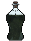 Кукловод Рецепт зелья (Последовательность 5). Эта Seq нужна для ступени VI.
Кукловод Рецепт зелья (Последовательность 5). Эта Seq нужна для ступени VI.
Ингредиенты
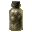
Прах древних призраков — крафт: верстак; существо мода: Призрак (водится: Мир духов, Подземный мир; приходит и Ночью Мира духов) — 11 % за убийство. Вода Золотого источника — пустая бутылка: источник воды (в биоме: Заросшие пещеры, Карстовые пещеры) — 100 % за попытку, бутылка остывает 0,5 с. Все источники (2)
Вода Золотого источника — пустая бутылка: источник воды (в биоме: Заросшие пещеры, Карстовые пещеры) — 100 % за попытку, бутылка остывает 0,5 с. Все источники (2)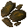
Кора драконова дерева — топор: ободрать: Бревно джунглевого дерева, Древесина джунглевого дерева — 10 % за бревно.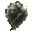
Остаточная духовность древних призраков — крафт: верстак; существо мода: Призрак (водится: Мир духов, Подземный мир; приходит и Ночью Мира духов) — 11 % за убийство.- Глаза шестикрылой горгульи — крафт: верстак; существо мода: Каменный голем (водится: весь верхний мир) — 4,8 % за убийство.
Способности
- Кукловодство — Управлять нитями духовного тела, превращая кого угодно в свою марионетку и командуя ею
- Управление марионетками — Больше возможностей управления марионетками. Нажмите Shift, чтобы перебирать марионеток
Отыгрыш — переваривание за действие и перерыв между засчитанными:
- Убить исподтишка — 0,26 %, раз в 2 с
- Выпить зелье невидимости — 0,26 %, раз в 2 с
- Применить «Кукловодство» — 0,53 %, раз в 10 с
- Использовать поводок — 0,26 %, раз в 10 с
- Приручить животное — 0,26 %, раз в 15 с
- Использовать бирку — 0,21 %, раз в 10 с
- Убить моба, не нацеленного на вас — 0,21 %, раз в 5 с
Seq 4 · Странный Колдун
Зелье 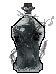 Странный Колдун Рецепт зелья (Последовательность 4). Эта Seq нужна для ступени VII.
Странный Колдун Рецепт зелья (Последовательность 4). Эта Seq нужна для ступени VII.
Ингредиенты
- Главный глаз Причудливого Бича — существо мода: Странная Погибель (водится: Мир духов; приходит и Ночью Мира духов) — 16 % за убийство.
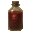
Кровь Причудливого Бича — существо мода: Странная Погибель (водится: Мир духов; приходит и Ночью Мира духов) — 16 % за убийство.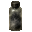
Прах Грабителя Мира духов — существо мода: Призрак (водится: Мир духов, Подземный мир; приходит и Ночью Мира духов) — 7,3 % за убийство.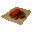
Кора рыжеволосой берёзы — топор: ободрать: Берёзовое бревно, Берёзовая древесина — 8 % за бревно.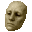
Самодельная резиновая маска размером с ноготь — существо мода: Странная Погибель (водится: Мир духов; приходит и Ночью Мира духов) — 10 % за убийство.
Способности
- Мифическая форма
- Усиление кукловодства (пассивная) — Дальность сильно возросла, а время заметно сократилось. Марионетки теперь могут применять ваши способности. Число марионеток увеличено
Отыгрыш — переваривание за действие и перерыв между засчитанными:
- Применить «Кукловодство» — 0,42 %, раз в 15 с
- Выпить зелье невидимости — 0,21 %, раз в 2 с
- Бросить жемчуг Края — 0,084 %, раз в 5 с
- Поставить голову моба — 0,84 %, раз в 5 с
- Съесть гнилую плоть — 0,17 %, раз в 10 с
- Съесть иглобрюха — 0,17 %, раз в 10 с
- Стоять рядом с лавой — 0,042 %, раз в 20 с
- Убить во тьме — 0,17 %, раз в 5 с
Seq 3 · Учёный Былых Времён
Зелье 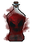 Учёный Былых Времён Рецепт зелья (Последовательность 3). Эта Seq нужна для ступени VIII.
Учёный Былых Времён Рецепт зелья (Последовательность 3). Эта Seq нужна для ступени VIII.
Ингредиенты
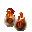
Глаза Гончей Фулгрима — существо мода: Мрачный Жнец (водится: Мир духов, Подземный мир; приходит и Ночью Мира духов) — 3,9 % за убийство.- Кровь Гончей Фулгрима — существо мода: Мрачный Жнец (водится: Мир духов, Подземный мир; приходит и Ночью Мира духов) — 3,9 % за убийство.
 Белый морозный кристалл Туманного демонического волка — сундук: Постройки Мира духов — 2,1 %; существо мода: Мрачный Жнец (водится: Мир духов, Подземный мир; приходит и Ночью Мира духов) — 3,9 % за убийство.
Белый морозный кристалл Туманного демонического волка — сундук: Постройки Мира духов — 2,1 %; существо мода: Мрачный Жнец (водится: Мир духов, Подземный мир; приходит и Ночью Мира духов) — 3,9 % за убийство.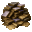
Подлинные древние исторические записи — существо мода: Демон знания (водится: Мир духов, океаны; приходит и Ночью Мира духов) — 2,9 % за убийство.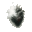
Преображённое сердце Туманного демонического волка — существо мода: Мрачный Жнец (водится: Мир духов, Подземный мир; приходит и Ночью Мира духов) — 3,9 % за убийство.
Способности
- Призыв из Исторической пустоты — Отмечать предметы или существ, чтобы призывать их из Исторической пустоты; через некоторое время они исчезнут, вернувшись в Историческую пустоту
- Призыв себя из Исторической пустоты — Призвать себя из Исторической пустоты и управлять этим образом, пока тело остаётся в Исторической пустоте. Shift + ЛКМ — вернуться в тело.
- Заимствование из Исторической пустоты — Ненадолго и ограниченное число раз заимствовать силы у своего прошлого «я»: здоровье, духовность, прошлое невредимое состояние без эффектов, прошлые полезные эффекты, прошлые силы Потустороннего
- Укрытие в Исторической пустоте — Скрыться в Исторической пустоте, став невидимым, но неподвижным; выйдя, вы окажетесь ровно там, где применили способность
Отыгрыш — переваривание за действие и перерыв между засчитанными:
- Использовать кафедру — 0,63 %, раз в 20 с
- Поторговать с жителем — 0,63 %, раз в 20 с
- Создать книгу — 0,16 %, раз в 20 с
- Создать книжный шкаф — 0,16 %, раз в 30 с
- Прочитать подписанную книгу — 0,32 %, раз в 20 с
- Расчистить подозрительный блок — 0,32 %, раз в 20 с
- Открыть резной книжный шкаф — 0,16 %, раз в 15 с
- Использовать стол зачаровывания — 0,16 %, раз в 15 с
Seq 2 · Призыватель Чудес
Зелье 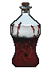 Призыватель Чудес Рецепт зелья (Последовательность 2).
Призыватель Чудес Рецепт зелья (Последовательность 2).
Ингредиенты
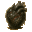
Сердце Тёмного демонического волка — существо мода: Мрачный Жнец (водится: Мир духов, Подземный мир; приходит и Ночью Мира духов) — 2 % за убийство.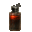
Кровь Тёмного демонического волка — существо мода: Мрачный Жнец (водится: Мир духов, Подземный мир; приходит и Ночью Мира духов) — 2 % за убийство. Червь времени — существо мода: Погибель (водится: Мир духов; приходит и Ночью Мира духов) — 1,7 % за убийство.
Червь времени — существо мода: Погибель (водится: Мир духов; приходит и Ночью Мира духов) — 1,7 % за убийство. Червь звезды — существо мода: Погибель (водится: Мир духов; приходит и Ночью Мира духов) — 1,7 % за убийство.
Червь звезды — существо мода: Погибель (водится: Мир духов; приходит и Ночью Мира духов) — 1,7 % за убийство.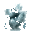
Туман истории — существо мода: Демон знания (водится: Мир духов, океаны; приходит и Ночью Мира духов) — 0,95 % за убийство.
Способности
- Власть ангела — Ангельская сила: странствуйте по Миру духов и сокрушайте артефакты
- Сотворение чудес — Явить множество чудес
- Чудо воскрешения (пассивная) — Восстать из мёртвых и укрыться в Исторической пустоте.
Отыгрыш — переваривание за действие и перерыв между засчитанными:
- Применить «Сотворение чудес» — 0,63 %, раз в 20 с
- Поторговать с жителем — 0,63 %, раз в 20 с
- Съесть золотое яблоко — 0,17 %, раз в 10 с
- Использовать маяк — 0,21 %, раз в 30 с
- Поставить свечу — 0,11 %, раз в 10 с
Seq 1 · Служитель Тайн
Зелье 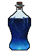 Служитель Тайн Рецепт зелья (Последовательность 1).
Служитель Тайн Рецепт зелья (Последовательность 1).
Ингредиенты
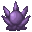
Служитель Тайн Характеристика Потустороннего (Последовательность 1) — характеристика Потустороннего Диковины Мира духов — существо мода: Погибель (водится: Мир духов; приходит и Ночью Мира духов) — 1,7 % за убийство.
Диковины Мира духов — существо мода: Погибель (водится: Мир духов; приходит и Ночью Мира духов) — 1,7 % за убийство.- Червь времени — существо мода: Погибель (водится: Мир духов; приходит и Ночью Мира духов) — 1,7 % за убийство.
- Червь звезды — существо мода: Погибель (водится: Мир духов; приходит и Ночью Мира духов) — 1,7 % за убийство.
- Туман истории — существо мода: Демон знания (водится: Мир духов, океаны; приходит и Ночью Мира духов) — 0,95 % за убийство.
Способности
- Прививка — Прививать друг к другу разное: места, здоровье и прочее. Чтобы снять прививку, примените способность рядом, удерживая Shift. Чтобы в некоторых подспособностях выбрать целью себя, просто не выбирайте цель.
- Прививка способностей — Переключаемая способность усиливает вас и ваши способности: удар всегда находит цель, уклонение и удача цели не помогают; расходует духовность. Также прививает действие части способностей существам вокруг, проекциям и марионеткам
Отыгрыш — переваривание за действие и перерыв между засчитанными:
- Поставить фонарь душ — 0,021 %, раз в 2 с
- Съесть подозрительное рагу — 0,021 %, раз в 2 с
- Убить во тьме — 0,21 %, раз в 2 с
- Стоять в полной темноте — 0,021 %, раз в 30 с
- Встретить рассвет — 0,053 %, раз в 1 мин
- Открыть сундук Края — 0,053 %, раз в 15 с
- Поставить факел душ — 0,021 %, раз в 5 с